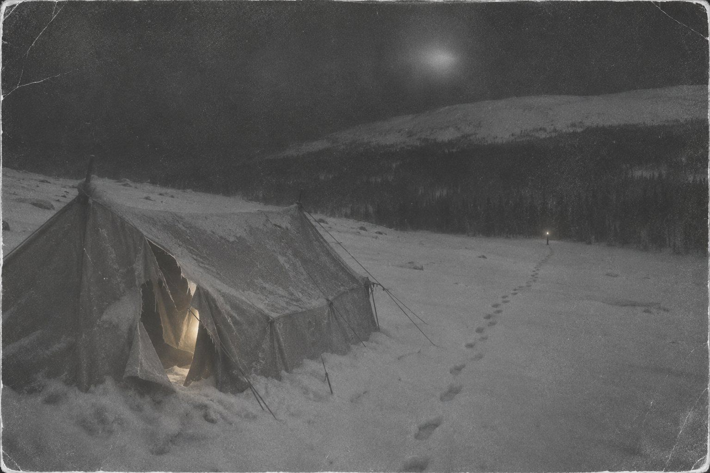

Десятый

Во Втором Северном было слишком тихо для места, где когда-то жили люди.
Зина Колмогорова поняла это не сразу, а только когда сняла лыжи и пошла между домами, проваливаясь в снег по колено. Посёлок геологоразведчиков бросили давно: окна без стёкол, двери настежь или сорваны, в одном доме на столе стояла кружка, вмёрзшая в лёд. Ни следа зверя, ни птичьего крестика на снегу. В тайге, которую они прошли за последние дни, всегда кто-то был — заяц, куропатка, белка роняла с еловой лапы снег, — а здесь будто кто-то положил на посёлок ладонь и держал.
Здесь, двадцать восьмого января пятьдесят девятого года, от группы уходил Юра Юдин.
У Юры с утра разболелась нога: в дороге он простыл, и теперь воспалился седалищный нерв, так что боль шла от поясницы до самой пятки. Он ходил, приволакивая ногу, и улыбался, как улыбаются, когда больно, а показывать нельзя. Игорь Дятлов, руководитель, посмотрел на него за завтраком, ничего не сказал, а потом, когда пили чай, сказал: «Юрка, возвращайся. С такой ногой ты нам Отортен не возьмёшь, а мы тебя на нартах не повезём». Юра спорил минут пять и сдался. До Вижая, откуда ходил грузовик к людям, был день пути с попутной лошадью, которая возвращалась от геологов.
Пока ребята перекладывали из его рюкзака общие вещи, Юра ходил по посёлку. Зина видела, как он заходил в пустые дома, наклонялся, что-то поднимал. Он и в поход пошёл отчасти ради этого: обещал набрать на брошенном руднике образцов для институтской коллекции. Камни попадались не те, и он ходил из дома в дом, упрямый, как все геологи, даже недоучившиеся.
Прощались у крайнего дома. Юра обнимал всех по очереди, Люду Дубинину дольше всех, и Люда отвернулась, чтобы он не видел, что она ревёт. Сашу Золотарёва, который был в группе старше всех, фронтовик, ему под сорок, — Юра обнял, хлопнув по спине, как равного. Зину он поцеловал в щёку и сказал: «Привези мне с Отортена камушек».
Потом он пошёл к саням, оглянулся и крикнул, сложив руки рупором:
— Ребята-а! Ждите-е! Я ещё с вами схожу!
И посёлок ответил.
Эхо здесь было странное. Оно пришло не сразу, как приходит в горах, а через долгую секунду, будто кто-то в пустых домах дослушал фразу до конца, подумал и только тогда повторил. И повторило оно не всё. Оно сказало только: «Ждите…» — Юриным голосом, но тише, и не оттуда, откуда должно было, а сзади, из дома с вмёрзшей кружкой.
Зина обернулась. Дом стоял пустой. Дверь висела на одной петле.
— Слышали? — спросила она.
— Что? — сказал Коля Тибо, и все засмеялись, потому что Коля так говорил на любой вопрос, даже когда всё слышал.
Зина тоже засмеялась. Через четыре дня она вспомнит этот смех, и рассказать о нём будет уже некому.
⁂
К первому февраля они вышли к перевалу.
Шли весь день против ветра, по склону горы, которую на карте обозначали высотой 1079, а местные манси, сказал Игорь, называли по-своему, и лучше не спрашивать как. К вечеру ветер стал такой, что Зина перестала чувствовать нос, а солнце садилось за хребет красным, как прорубь с кровью. До леса внизу было полтора километра. Игорь посмотрел вниз, посмотрел вверх, на седловину, через которую им завтра идти к Отортену, и решил ставить палатку прямо здесь, на склоне.
— Высоту не отдадим, — сказал он. — Утром рванём налегке.
Никто не спорил. С Игорем вообще спорили только по пустякам.
Палатку им сшили из двух старых, длинную, как вагон, на десять человек — на девять теперь. Её поставили на лыжах, в вырытой в снегу траншее, растянули на палках, подвесили внутри печку, но топить не стали: дрова надо было беречь до леса. Залезли все, сняли мокрые ботинки и поставили их в ногах, чтобы не задубели, легли вплотную, головами вверх по склону, ногами вниз. Было тесно, тепло от дыхания, пахло мокрой шерстью, табаком, сухарями и салом, которое Саша Колеватов нарезал своим ножом прямо на колене.
Потом Юра Кривонищенко достал карандаш и тетрадный лист, и они в шесть рук написали стенгазету. Назвали «Вечерний Отортен». Первый номер. Передовица, новости науки, спорт. В новостях науки Коля Тибо вписал, что снежный человек существует и обитает на Северном Урале, в районе горы Отортен, и Люда так смеялась, что икала до самого отбоя. Рустем Слободин сказал, что если снежный человек существует, то пусть приходит, у нас как раз место освободилось. Все помолчали, потому что место освободилось Юрино.
Около полуночи Саша Золотарёв посмотрел на часы, которых в темноте не было видно, и сказал, что вот, ребята, ему тридцать восемь лет. Второе февраля. Ему спели «Каким ты был, таким остался» шёпотом, чтобы не смеяться в голос, и Зина сунула ему в руку последнюю ириску, которую берегла.
Потом все затихли. Ветер бился в стенку палатки, как кто-то, кто хочет войти и не знает где.
⁂
Зина проснулась оттого, что Люда держала её за руку и сжимала пальцы так, что было больно.
— Слышишь? — шепнула Люда.
Ветер стих. Это первое, что Зина поняла: ветра больше нет. Палатка стояла неподвижно, и за её стенкой было так тихо, как во Втором Северном.
А потом снизу, со склона, оттуда, где начинался лес, раздался голос.
— Ребята!..
Голос был далеко и в то же время отчётливо, как бывает зимой, когда воздух звенит.
— Ребята, вы тут?.. Игорь!.. Это я, Юрка!..
В палатке зашевелились. Кто-то сел. Кто-то нашарил фонарик, и луч пошёл по скату, по лицам, по спальникам.
— Юдин? — сказал Игорь. Голос у него был совсем трезвый, как будто он не спал. — Какой Юдин? Он в Свердловске.
— Ребята-а!.. — донеслось снизу. — Ребята, я за вами пошёл… Мне лучше стало… Я по лыжне шёл… Лыжу сломал… Ног не чую… Ребята, где вы?..
Это был Юра. Зина узнала бы его голос из тысячи: высокий, чуть в нос, с тем протяжным «а-а» на конце, которое он всегда тянул, когда кричал издалека. Голос срывался, в нём стояли слёзы. Так плачут мужчины, которые не плачут.
— Мать честная, — сказал Колеватов. — Он нас догнал. Догнал и в темноте под склоном встал. Замерзает.
— Юра-а! — крикнул Игорь, приподнявшись. — Мы тут! Стой на месте! Мы идём!
И тогда снизу ответили:
— Тут я… Тут… Рядом… Светите…
Колеватов выхватил нож. Вход в палатку был со стороны склона, сбоку, его надо было развязывать, а голос шёл снизу, из темноты за скатом, и Колеватов не стал развязывать. Он полоснул ножом по скату изнутри, раз, другой, раздвинул брезент руками, высунул голову и сказал:
— Огонёк. Вон. Внизу. У леса.
Зина просунулась рядом с ним. Внизу, у самой кромки леса, далеко, горел маленький огонёк — неяркий, ровный, похожий на фонарь, поставленный в снег.
— Двести метров, — сказал Игорь у неё за спиной, и она поняла, что он врёт, что там больше, но он хочет, чтобы они пошли быстро. — Обуваться некогда. Ботинки задубели, полчаса будем натягивать, он за полчаса пальцы потеряет. В чём есть. Тёплое на себя, что под руку. Быстро. Друг за другом, по склону, никто не бежит, кто побежит — переломает ноги. Пошли.
Они пошли.
Потом, когда всё это прочли в протоколах, удивлялись: почему следы такие ровные, почему цепочкой, почему шагом, а не бегом? Люди, которые бегут от чего-то страшного, так не идут. А они и не бежали. Они шли к другу. Склон был крутой и обледенелый, внизу ждал человек, которому нужна была помощь, и никто не имел права упасть и стать вторым, кого надо нести. Зина шла в шерстяных носках, по два на каждой ноге, в лыжных штанах и свитере, и снег под ногами был твёрдый, как асфальт, и через минуту она перестала чувствовать пальцы, а через три — подошвы. Впереди шла Люда, позади пыхтел Коля Тибо. Никто не говорил. Все слушали.
— Ребята… — голос был уже ближе. — Сюда… Я тут…
Огонёк у леса мигнул и отступил. Зина увидела это: он был на месте, а потом оказался чуть левее и чуть ниже, как если бы кто-то с фонарём, шатаясь, сделал два шага в сторону.
— Юра, стой! — крикнул Игорь. — Стой на месте!
— Стою… — ответили снизу. — Стою, ребята… Холодно…
⁂
У леса огонька не было.
Был кедр — старый, огромный, на краю ложбины, которая уходила вглубь, к ручью. Было тихо. Снег под кедром лежал ровный, нетронутый, и ни одного следа, кроме их собственных.
— Юра! — заорал Дорошенко так, что с веток посыпалось. — Юрка!
Тишина. Даже эха нет.
— Он дальше пошёл, — сказал Игорь. — Нас не дождался. Ищет. Разводим костёр. Он увидит — придёт.
Они ломали сухие нижние ветки, Кривонищенко чиркал спичками, руки не слушались, спички ломались. Огонь занялся не сразу, потом пошёл, маленький, злой, неспособный никого согреть. Ребята жались к нему, поворачивались то одним боком, то другим. Зина сунула руки к огню и не почувствовала жара. Она смотрела на свои пальцы и не могла понять, чьи это пальцы.
— Залезу, гляну, — сказал Кривонищенко. — Сверху видно будет, где он.
Он полез на кедр. Он лез долго, срываясь, ломая ветки, потому что руки не держали, и Зина слышала, как трещит дерево и как он ругается сквозь зубы — Юра Кривонищенко, который никогда не ругался при девушках. Метрах в пяти он остановился и замер.
— Ну? — крикнул Игорь.
Кривонищенко долго не отвечал. Потом сказал, но не громко, а так, что его едва было слышно:
— Свет. В палатке.
Все повернулись. Наверху, на склоне, там, откуда они пришли, светилась палатка. Слабо, жёлто, будто внутри кто-то зажёг фонарик и положил его на спальник.
И оттуда, сверху, раздался голос.
— Ребята!.. Ребята, вы где?.. Я в палатке… Я пришёл, а вас нет… Ребята…
Это был Юрин голос.
— Разминулись, — сказал Игорь, и Зина услышала в его голосе облегчение, такое огромное, что ей стало страшно. — В темноте разминулись. Он по нашим следам поднялся. Он там. Слава богу. Ребята, он в палатке.
Люда стояла рядом с Зиной и смотрела вверх, и Зина увидела её лицо в свете костра. Люда не радовалась.
— Он не так сказал, — проговорила она тихо.
— Что?
— Юрка не говорит «ребята, вы где». Он говорит «эй, народ». Всегда говорит «эй, народ». Ты что, не помнишь?
Зина помнила. Юра всегда так кричал, когда искал кого-нибудь по общежитию: «Эй, наро-од!» И когда он прощался во Втором Северном, он крикнул не «народ», а «ребята», и посёлок ответил ему «ждите» — тише, не оттуда, из дома с вмёрзшей кружкой.
— Он повторяет, — сказала Люда, и голос у неё сорвался. — Он только то повторяет, что слышал.
— Люда, ты что? — сказал Игорь.
— Игорь, это не Юра.
Игорь посмотрел на неё долгим взглядом. Он был руководитель. Он отвечал за всех девятерых и за десятого, который где-то там, наверху, замерзал в палатке или не замерзал, потому что его там не было. Зина видела, как он выбирает.
— Мы с Рустиком пойдём наверх, — сказал Игорь. — Посмотрим. Принесём вещи, ботинки, одеяла. Остальные — здесь, у огня. Колеватов старший.
— Я с вами, — сказала Зина.
Она сама не знала, зачем сказала. Наверное, потому что, если это Юра, она хотела его увидеть первой. Если не Юра — увидеть, что это.
⁂
Склон вверх был в десять раз круче, чем вниз.
Игорь шёл впереди, Рустем за ним, Зина последней. Ветер вернулся и бил в лицо колючим снегом, и носки на ногах обледенели и стали тяжёлыми, как гири. Через сто шагов у Зины перестали гнуться колени. Через двести она шла на четвереньках. Свет в палатке наверху не приближался.
— Юра! — крикнул Игорь. — Юрка, мы идём! Фонарём посвети!
— Свечу, — ответили сверху. — Свечу, ребята… Тут я…
И тут Зина услышала то, чего никогда никому не смогла бы рассказать, даже если бы осталась жива.
Снизу, от кедра, от костра, через склон и ветер её позвал Кривонищенко:
— Зина-а! Вернись! Зина, не ходи!..
Она обернулась. Внизу, у кромки леса, горел их костёр, маленький, как спичка. И от костра, далеко, она услышала, как в ответ Кривонищенко кричит Игорь:
— Юра, мы тут! Стой на месте!
Голос Игоря. Снизу. От костра. Хотя Игорь был здесь, в двадцати шагах выше, и видно было его спину.
Тогда Зина поняла. Не умом, умом это понять было нельзя, а спиной, которая вдруг стала очень холодной изнутри. Оно не Юра. Оно не Игорь и не Кривонищенко. У него нет своего голоса. Оно берёт те, которые слышит, и чем больше слышит, тем больше у него голосов. Во Втором Северном оно услышало Юру, который прощался, и пошло за остальными, потому что тот, кто прощается, обещает вернуться, а к тому, кто обещал вернуться, выходят без ботинок. Сейчас, этой ночью, оно слушало их всех. Каждое слово, которое они кричали в темноту, оно складывало, как Юра складывал камни в рюкзак.
— Игорь! — крикнула она. — Игорь, молчи! Не кричи ему! Не надо ему ничего говорить!
Игорь не обернулся. Ветер отнёс её голос в сторону, вниз, и она услышала, как этот голос, её голос, повторяет снизу, от кедра, через несколько секунд, тише, чем она сказала:
— …не надо ничего говорить…
И это был не её голос. Это был её голос, сказанный кем-то другим.
Она легла лицом в снег, чтобы не кричать.
Последнее, что она помнила, — Рустем сорвался со склона и покатился вниз, ударившись головой о камень, и затих. Игорь, впереди, лёг на снег, и больше она его не видела. Свет в палатке наверху погас. А над склоном, низко, медленно, без звука, проплыл огонь — не фонарь, не костёр, а что-то круглое, тусклое, оранжевое, какие потом той зимой видели над Ивделем, и в протоколах о них писали «неустановленное световое явление». Огонь остановился над ней и повисел, будто разглядывал. Потом ушёл вниз, к лесу, к оврагу, где у ручья остались четверо.
Она поползла вверх. К палатке. Потому что там были ботинки, и одеяла, и свечи, и, может быть, всё-таки Юра.
⁂
Их нашли в конце февраля. Палатку, разрезанную изнутри, с аккуратно сложенными внутри ботинками, одеялами, сухарями, стенгазетой «Вечерний Отортен» номер один. Двоих — под кедром, у погасшего костра, в нижнем белье, с обожжёнными руками; ветки на кедре были обломаны до высоты пяти метров. Троих — на склоне, на одной прямой от кедра к палатке, лицами вверх, к палатке, будто все трое до конца шли туда, откуда их звали. Зина лежала выше всех, на животе, вытянув руки вперёд.
Последних четверых нашли в мае, когда растаял снег: в овраге у ручья, в семидесяти пяти метрах от кедра, под четырьмя метрами снега. Они успели сделать себе настил из срубленных пихточек и лечь на него, и надеть на себя одежду, срезанную с тех, кто умер у костра. Они прятались. Они не разводили огня и, судя по всему, не говорили — ни одного слова до самого конца, сколько бы их ни звали снаружи самыми родными голосами. У Саши Золотарёва и Люды Дубининой были раздавлены грудные клетки, а наружных ран не было, как будто на них долго давило что-то тяжёлое, у чего нет ни тела, ни веса. У Коли Тибо была проломлена голова. У Люды Дубининой не было языка.
Следствие закрыли в мае. Причиной гибели назвали «стихийную силу, преодолеть которую люди были не в состоянии». На последнем кадре одной из плёнок, которую потом проявили, ничего нельзя было разобрать — только мутные светлые пятна в темноте, как будто кто-то снимал свет, идущий к нему по склону.
⁂
Юрий Ефимович Юдин прожил после этого пятьдесят четыре года.
Он работал инженером, потом много лет в городской администрации Соликамска. Он был женат, ходил на рыбалку, ездил на встречи памяти в Екатеринбург, на Михайловское кладбище, где лежали восемь из девяти, и каждый раз, стоя у памятника, думал одно и то же. Если бы он мог задать Богу только один вопрос, он спросил бы, что случилось с его друзьями в ту ночь. Он говорил это журналистам, и журналисты записывали.
Он не говорил им другого.
Он никогда никому не рассказывал, что во Втором Северном, когда он крикнул ребятам «Ждите!», а потом сел в сани и сани поехали, посёлок ответил ему ещё раз, уже вслед, когда никто, кроме него, не мог услышать. Ответил голосом Люды Дубининой, которую он только что обнимал, — её мягким голосом, — но не её словами, а его:
— Ребята! Ждите!
Он тогда подумал, что ему показалось из-за спины, из-за температуры. Он думал так пятьдесят четыре года.
В апреле две тысячи тринадцатого года ему было семьдесят пять. Он болел. Ночью в Соликамске ещё стояли заморозки, и в квартире было слышно, как по жестяному карнизу ходит ветер. Юрий Ефимович не спал. Он лежал в темноте и слушал, как тикают часы на кухне.
Под окном, на улице, на третьем этаже, где не могло быть никакой улицы, только воздух, его позвали.
— Юра…
Голос был молодой, весёлый, с той хрипотцой, которая бывает после целого дня на ветру.
— Юрка… Это Игорь. Мы тут, недалеко. Вышли тебя встречать. Холодно, Юр. Выйди. В чём есть выходи, обуваться некогда.
Юрий Ефимович лежал неподвижно. Он понял, что ждал этого всю жизнь. Не смерти — смерти он не боялся. Этого голоса. Этого «в чём есть».
— Юра, — сказал под окном другой голос, девичий, Зинин, — ты же обещал. Ты обещал, что ещё с нами сходишь.
— Юрка, — сказал третий, Люды, — ну где ты? Мы ждём.
Он не ответил. Он закрыл глаза и сжал зубы, как ребята в овраге, которые сделали себе настил из пихточек и молчали до самого конца. Он молчал. Он подумал: я не скажу ему ни одного слова, пусть зовёт. Я пятьдесят четыре года молчал, промолчу и эту ночь.
Под окном стало тихо.
Потом по мёрзлому асфальту захрустели шаги. Они не приближались, а уходили, неторопливо, вдоль дома, через двор, туда, где в доме напротив ещё горело одно окно. Под тем окном шаги остановились. И оттуда, из темноты, кто-то позвал тех, кто ещё не спал, — высоко, чуть в нос, с тем протяжным «а-а» на конце, которое он тянул, когда кричал издалека:
— Ребята-а! Ждите-е! Я ещё с вами схожу!
Это был его собственный голос, тот, мальчишеский, который у него взяли во Втором Северном и носили с собой пятьдесят четыре года, пока у них было девять других.
Теперь у них было десять.
Юрий Ефимович Юдин умер двадцать седьмого апреля. Четвёртого мая урну с его прахом отвезли в Екатеринбург и положили в братскую могилу на Михайловском кладбище, к ребятам.
Он всё-таки с ними сходил.